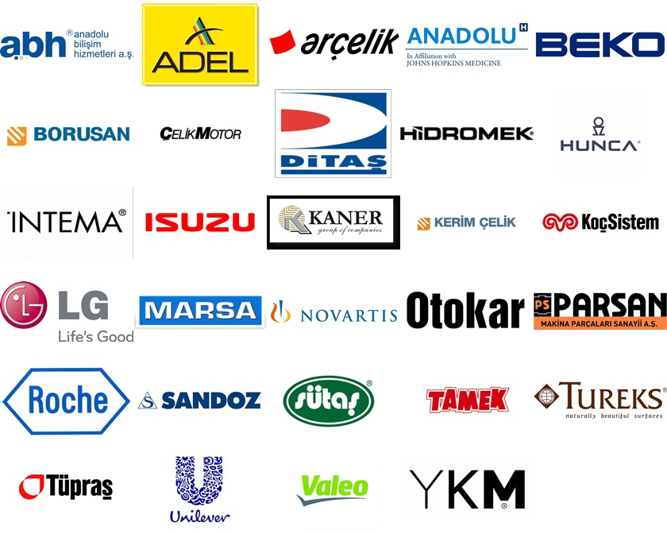
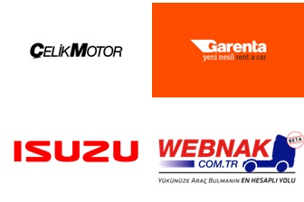
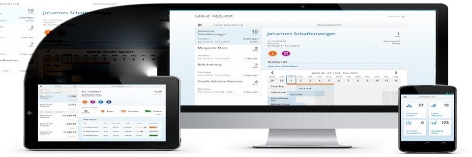

Since the day it was founded, Protek has been providing fast and accurate solutions that facilitate the processes of the customers it serves in the field of corporate applications.
As Protek, our solution adventure, which started with SAP ERP, continues to strengthen in different areas such as business intelligence, supply chain management, customer relations, e-transformation. We always aim to gain the satisfaction and trust of our customers at the center of the services and solutions we offer. With the knowledge and experience we have gained in different sectors and business areas, we also develop solutions and applications on different software development platforms such as Microsoft.net and Java.
A robust business platform is an inevitable requirement to compete and succeed in the global economy. SAP ERP makes it easier for you to manage your processes and operations, which are vital for your company, and offers solutions tailored to the needs of your industry.
SAP Finance Solutions, which are used for businesses to use their financial resources effectively and manage cash flow, provide an integrated financial transactions management system and guide businesses by meeting many different calculation requirements. By working in integration with internal and external functions, it allows multidimensional analysis of financial transactions produced in the background by other modules.
The complex problems that can be caused by commercial data are simplified with the easy-to-use and enhanced automation features of SAP Finance Solutions, reducing the error rates caused by manual processes, saving time and cost. Thanks to its flexible architecture and graphical reporting applications, it can be quickly adapted to the specific requirements of countries.
Organizations that want to provide the best service to their customers are focused on delivering their services and products to their customers in a fast and high quality manner. Efficient fulfillment of all activities within the organization is a prerequisite for good service to customers. A business can fulfill all business processes from suppliers to customers regardless of demand and changes in the market.
It is the basis for businesses to use human resources more efficiently, to reduce costs, and to realize the company's goals thanks to the increased motivation of the personnel working in the most suitable position for them.
It consists of sub-modules that include all processes that may be related to personnel, from personnel selection and placement to performance evaluation of employees, from wage management to travel and training planning. SAP Human Resources, with its structure open to development by enriching it with sub-modules that include these processes that businesses need, is designed in a flexible structure to make gradual transition.

Today, with developing technology, growing markets and increasing competition, customers, the biggest asset that keeps companies afloat in the business world, have also become the most important focal point.
In this sense, companies strive to get to know and understand their customers better and thus analyze their needs better and penetrate the market in a shorter time and with the most accurate solutions.
SAP CRM is offered to companies as an important tool on this path. This solution consists of three parts: Marketing, Sales and Service, and at many points it works in a bidirectional interaction and integration with basic ERP modules.
SAP CRM Marketing module performs Marketing Resources Management, Brand Management, Segmentation, Campaign Management, Lead Management, Prospect Management, Trade Promotion Management and Marketing Analysis functions; Sales module performs sales functions such as Activity, Opportunity, Offer, Order, Contract as well as E-Commerce, Interaction Center, Channel Management functions; Service module performs Service functions such as Installation Management, Warranty Management, Service Contracts, Service Order Management, Complaint and Return Management, Resource Planning as well as Service Interaction Center, E-Service, Channel Management and Mobile Application functions effectively regardless of the sector.

With Protek e-Ledger software
We meet the e-ledger requirements of companies using the SAP system in a fast and high quality manner.
We provide XBRL reporting infrastructure on SAP system.
We provide ease of use. Throughout the entire process, users only see the SAP screens they are familiar with.
We can easily adapt it to the journal program you are currently using.
We ensure that you can get results quickly without performance problems.
Very soon you will be able to use our Protek E-Ledger application in all your ERP systems, regardless of platform.
For detailed information, please contact edefter@proteksistem.com
With SAPUI5 technology on many devices such as mobile/pc/tablet via browser Data entry, approval processes and reporting can be done without the need for a setup.
Sample applications developed by our team:
- Supplier master data management application
- Workflow, Approval screens
- Service/Field applications
- Resource planning chart
For presentations of your requirements or of our existing applications, please contact bilgi@proteksistem.com

To provide continuous training and self-improvement opportunities for our employees,
To follow a transparent and open management policy for our employees,
To protect the material and moral rights of our employees
are our fundamental principles.
What has brought Protek Yazılım to this point today is the result of the fact that our company culture and basic principles have been adopted by all our employees and that our employees keep themselves open to continuous development and learning.